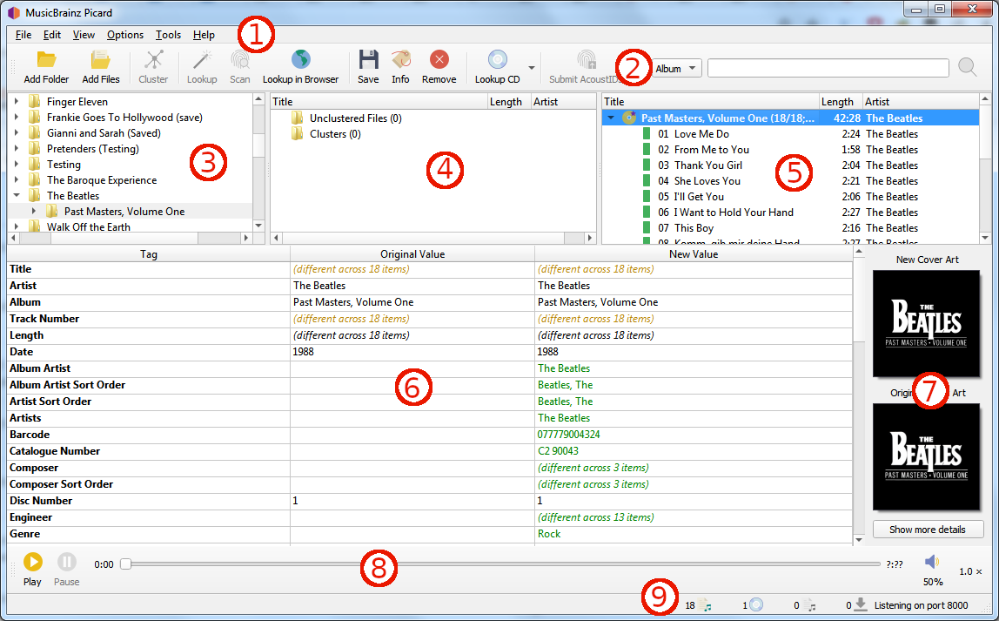

Main Screen¶
{kind=link}
Menu Bar: This provides the pull-down menu of actions that Picard can perform.
Tool Bar: This provides quick links to the main functions performed by Picard. This can be customized by the user in the User Interface Options settings.
File Browser: This provides a browser for selecting files and directories for processing.
Cluster Pane: Often referred to as the “left-hand pane”, this section allows the user to select and cluster files for scanning, lookup or matching.
Album Pane: Often referred to as the “right-hand pane”, this section displays the albums retrieved from MusicBrainz. This is the section where files are matched to downloaded track information.
Metadata Pane: This section is a three-column table of the tag metadata for the album or track currently selected in the Album Pane. The first column shows the tag name, the second shows the original value found in the file, and the third column shows the new value that will be written.
Cover Art: This shows the new cover art image that will be written to the selected album or track, along with the original cover art image found in the files matched to the selected album or track.
Player: The built-in player that can be used to play selected audio files.
Status Bar: The bar at the bottom of the screen shows information about the current operation of Picard, including such items as number of files, albums, and pending downloads.